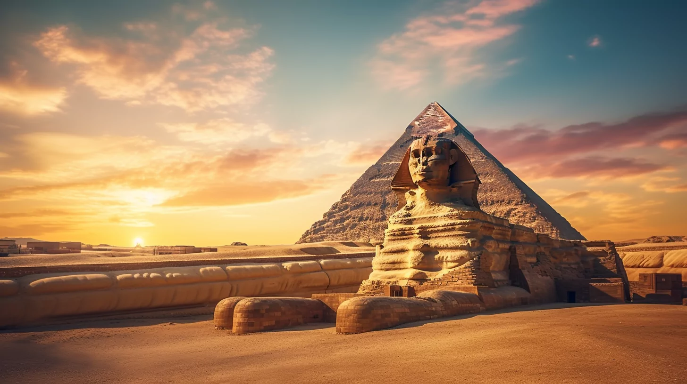
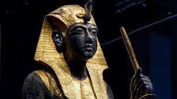
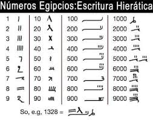
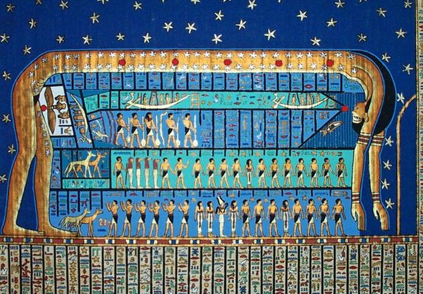
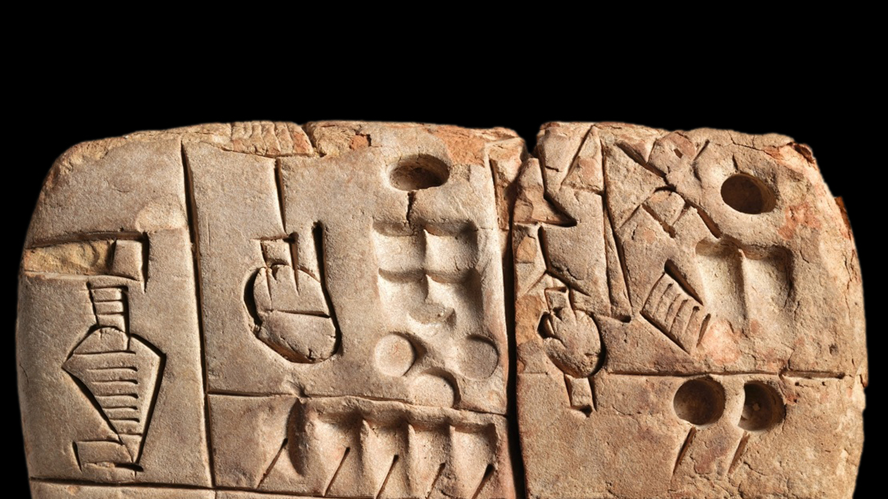
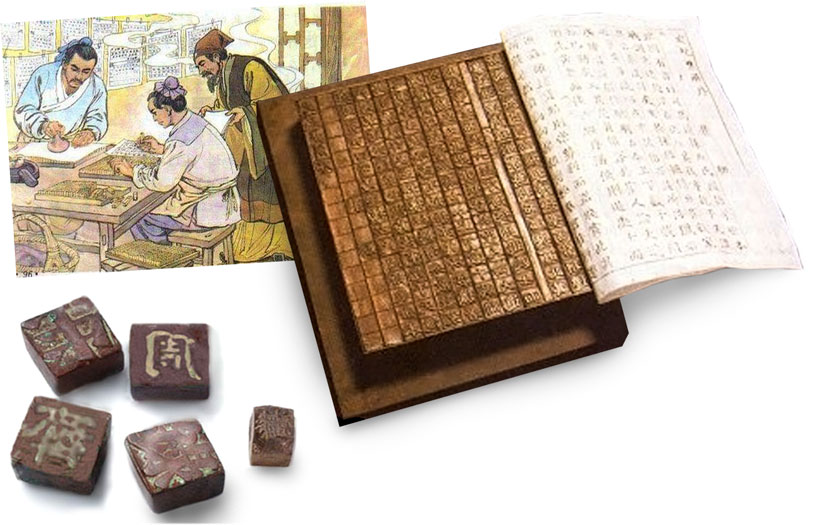
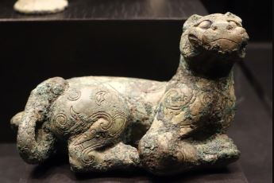

Civilizaciones Destacadas
Egipto
Pirámides de Egipto
Egipto es conocido por sus pirámides, faraones y avances en la medicina, matemáticas, y astronomía. Fue una de las civilizaciones más poderosas y duraderas de la historia.
Las pirámides egipcias son una de las maravillas más emblemáticas de la antigüedad. Fueron construidas principalmente como tumbas para los faraones y algunos de sus altos funcionarios. La más famosa es la Gran Pirámide de Giza, que fue construida durante el reinado del faraón Keops. Las pirámides fueron consideradas estructuras de gran importancia religiosa, ya que se creía que servían como escalones para que el faraón ascendiera al cielo y se uniera con los dioses.
Faraones
Los faraones eran los monarcas de Egipto y se consideraban dioses en la Tierra. Gobernaban con poder absoluto y tenían una función religiosa, política y militar. Algunos de los faraones más conocidos son:
- Tutankamón: Famoso por su tumba intacta, que contenía tesoros incomparables.
- Ramsés II: También conocido como Ramsés el Grande, es recordado por sus logros militares y su extenso programa de construcción.
- Cleopatra VII: La última faraona de Egipto, famosa por su inteligencia, belleza y su relación con Julio César y Marco Antonio.
Avances en Medicina
Los egipcios fueron pioneros en el campo de la medicina. Practicaban la cirugía, la medicina preventiva, y tenían conocimientos avanzados sobre anatomía y fisiología, adquiridos a través de la momificación. Los médicos egipcios eran expertos en el tratamiento de heridas y fracturas, y ya utilizaban remedios herbales. Los egipcios también documentaron enfermedades y sus tratamientos en papiros médicos, como el Papiro Ebers.
Avances en Matemáticas
Los egipcios desarrollaron un sistema matemático basado en la aritmética y la geometría. Eran expertos en medir tierras y construcciones, como lo demuestran las dimensiones precisas de las pirámides. Utilizaban fracciones y tenían una forma primitiva de álgebra. Los egipcios también crearon el sistema de números jeroglíficos y emplearon cálculos matemáticos para resolver problemas relacionados con la agricultura, el comercio y la ingeniería.
Avances en Astronomía
La astronomía egipcia estaba profundamente relacionada con la religión y la agricultura. Los egipcios observaron los movimientos de las estrellas, el sol y la luna para predecir las estaciones y las inundaciones del Nilo. Establecieron un calendario basado en el ciclo lunar y el ciclo solar, lo que les permitió dividir el año en 12 meses de 30 días cada uno, más 5 días adicionales. También crearon el concepto de horarios del día y la medición del tiempo usando relojes solares.
Mesopotamia
Mesopotamia
Mesopotamia, conocida como la cuna de la civilización, se desarrolló entre los ríos Tigris y Éufrates, en lo que hoy es Irak y parte de Siria. Esta región fue el hogar de grandes ciudades-estado como Ur, Uruk y Babilonia, donde los mesopotámicos crearon la primera forma de escritura cuneiforme, que permitió el registro de leyes, comercio y literatura. Además, hicieron importantes avances en matemáticas, astronomía y medicina, sentando las bases de muchas ciencias. Los mesopotámicos eran politeístas, adorando a numerosos dioses y construyendo templos conocidos como zigurats. Su legado perdura a través de su sistema legal, su contribución al conocimiento científico y su influencia en las civilizaciones posteriores.
China
China tiene una historia que se remonta a miles de años, siendo una de las civilizaciones más antiguas y perdurables del mundo. A lo largo de su historia, China ha hecho contribuciones significativas en varios campos que han tenido un impacto global.
Dinastía Shang (c. 1600 a.C. - 1046 a.C.)
La dinastía Shang (c. 1600 a.C. - 1046 a.C.) fue una de las primeras civilizaciones documentadas de China. Conocida por su escritura jeroglífica, fundición de bronce y su compleja estructura social, la dinastía Shang desempeñó un papel crucial en el desarrollo de la cultura y la religión china. La escritura oracular, realizada en huesos y caparazones de tortuga, permitía a los Shang predecir el futuro y tomar decisiones importantes para el reino.